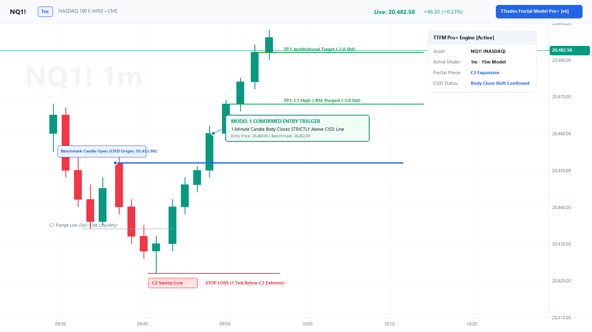
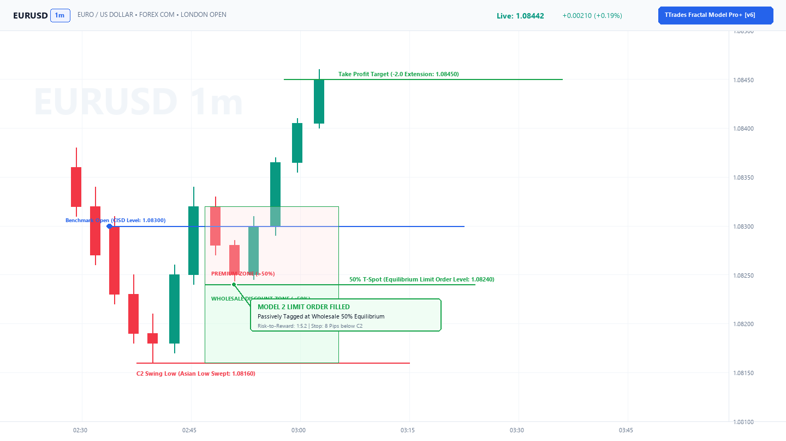
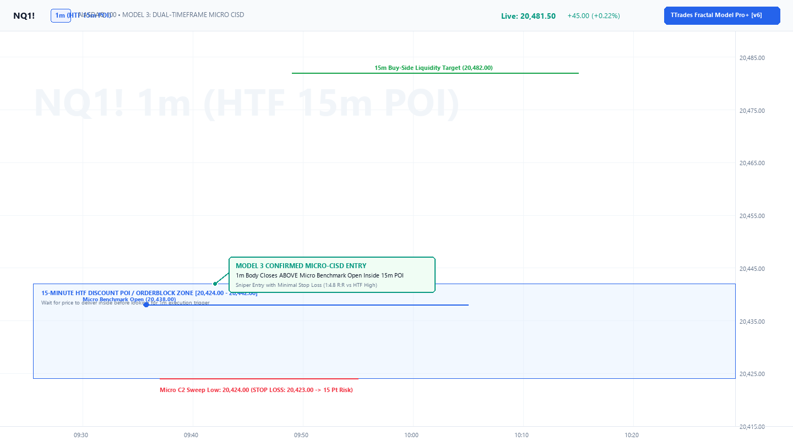
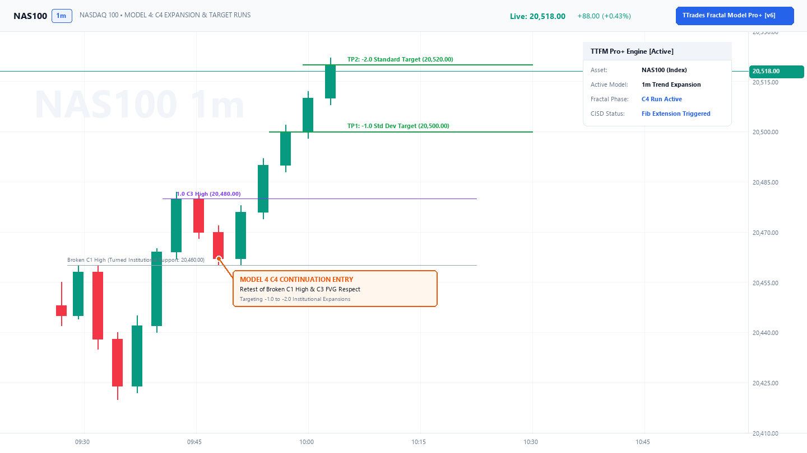

Chapter 06: Entry Models & Execution Playbook¶
Core Curriculum | Previous: Chapter 05: Timeframe Alignment | Next: Chapter 07: Targets & Risk
1. Executive Overview & Setup Pre-Conditions¶
Before looking for an entry trigger, the baseline market structure must already be confirmed on your chart:
| Step | Component | Institutional Requirement |
|---|---|---|
| 1 | C1 Reference Range | Clear High (Buy-Side Liquidity) and Low (Sell-Side Liquidity) established. |
| 2 | C2 Liquidity Sweep | C2 sweeps C1 extreme, taps an HTF POI, and closes back inside the range. |
| 3 | Directional Bias | Confirmed via HTF market structure or the indicator's Pro Auto Bias engine. |
Once the C2 sweep occurs, you are preparing to trade the expansion (C3 or continuation C4). Depending on market speed and your personal risk profile, the TTrades Fractal Model provides Four Distinct Entry Models.
2. Model 1: The CISD Body Break & Close (Momentum Confirmation)¶
"I refuse to guess the bottom. I want the algorithm to prove to me that buyers have taken control before I risk capital."

How It Works:¶
- Identify the Benchmark Origin:
- The indicator draws a Blue Horizontal Ray (for Bullish CISD) originating at the
Openof the first down-close candle into the C2 low, or a Red Horizontal Ray (for Bearish CISD) originating at theOpenof the first up-close candle into the C2 high.
- The indicator draws a Blue Horizontal Ray (for Bullish CISD) originating at the
- The Waiting Period:
- Even if
C3opens, if price is still trading below the benchmark line (for longs) or above the line (for shorts), do not enter yet. Orderflow has not flipped.
- Even if
- The Exact Trigger:
- Watch the 1-minute execution candle approaching the line.
- Wait for the candle timer to reach
0:00and for the candle body to close strictly beyond the CISD line. - A wick piercing the line does NOT count. The solid body must close past it.
- Order Execution:
- Variant A (Immediate Market Order): The exact second the candle body closes across the line, click Buy/Sell Market.
- Variant B (The Retest Dip): Place a limit order on the CISD line. Frequently, the very next candle takes a quick 1–3 tick dip to test the line before launching.
- Stop Loss (SL):
- Placed 1–2 ticks beyond the extreme wick tip of
C2.
- Placed 1–2 ticks beyond the extreme wick tip of
Read Full Deep Dive on Model 1 →
3. Model 2: The 50% T-Spot Limit Entry (Wholesale Discount Hunter)¶
"I refuse to chase green candles. I want to buy at a wholesale discount inside the manipulation wick."

How It Works:¶
- The Candlestick Mechanics (AMD / Power of 3):
- 95% of all expansion candles do not move straight to target from the open.
- A bullish candle first dips below its open to form a lower wick (Accumulation \(\rightarrow\) Manipulation) before expanding upward (Distribution).
- Anatomy of the T-Spot Box:
- Upper Bound: The Opening price of the
C3candle. - Lower Bound: The 50% Equilibrium (midpoint) of the preceding
C2candle ([C2 High + C2 Low] / 2), rendered as the dotted line.
- Upper Bound: The Opening price of the
- Order Execution:
- As soon as
C3opens and the green T-Spot box appears, place a Buy Limit Order sitting on the dotted line (or in the upper half of the box). - As minute 1, 2, or 3 dips into discount, your limit order gets filled passively.
- As soon as
- Stop Loss (SL):
- Tight Stop: 1–2 ticks below the dotted line (the bottom of the T-Spot box).
- Structural Stop: Below the lowest wick of
C2.
Read Full Deep Dive on Model 2 →
4. Model 3: The Micro-Structure Sniper (Dual Timeframe Precision)¶
"I want the wholesale discount of the T-Spot, but I want lower-timeframe confirmation before I click buy."

How It Works:¶
- You identify a setup on the
5m-1Hor1m-15mmodel. - Price enters the shaded T-Spot Box / HTF Discount POI.
- Instead of placing a blind limit order, you zoom into the 1-minute chart inside the box:
- Watch for a 1-minute candle to take a tiny internal low (Micro C2).
- Watch for an immediate 1-minute green candle to close with displacement, printing a micro CISD break.
- Order Execution:
- Enter Market Long on the close of that micro 1-minute green candle.
- Stop Loss (SL):
- Placed strictly below the micro swing low formed inside the box (often just 6–10 points on NQ!).
- Unlocks astronomical 1:5 to 1:10+ Risk-to-Reward.
Read Full Deep Dive on Model 3 →
5. Model 4: The C4 Trend Continuation Entry (The Second Chance)¶
"I was away from my desk when C2 swept and C3 exploded. How do I get into this running trend without buying the top?"

How It Works:¶
- The Mistake to Avoid:
- When
C3expands 60–100 points, retail traders panic and buy at the very top. Institutional algorithms then initiate a pullback, stopping them out.
- When
- The Rule:
- Never buy the top of
C3. Wait forC3to close.
- Never buy the top of
- Anatomy of the
C4Box:- When
C3ends, the new candleC4opens. - The indicator automatically draws the
C4T-Spot Box. - The dotted line at the bottom is the 50% midpoint of the giant
C3candle.
- When
- Order Execution:
- Price retraces from the high and dips down into the
C4green box. - Enter long inside the box (either via limit order or after a 1m green rejection candle).
- Price retraces from the high and dips down into the
- Targets:
- Ride the continuation leg into the final macro standard deviation targets (
-4.0/-4.5).
- Ride the continuation leg into the final macro standard deviation targets (
Read Full Deep Dive on Model 4 →
6. Master Comparison Matrix¶
| Model | Primary Trigger | Order Type | Confirmation Level | Typical RR | Best Used When... |
|---|---|---|---|---|---|
| Model 1 (CISD Break) | Candle body closes past Blue/Red line | Market on Close (or Retest Limit) | Highest (Full Body Confirmation) | 1:2 to 1:3.5 | You want zero ambiguity and momentum proof. |
| Model 2 (T-Spot Limit) | Price dips into 50% Equilibrium | Limit Order on Dotted Line | Medium (Assumes HTF POI holds) | 1:4 to 1:8+ | Clean trending days where you demand a discount. |
| Model 3 (Micro Sniper) | 1m FVG / CISD inside T-Spot box | Market on Micro Close | High (Multi-timeframe alignment) | 1:5 to 1:10+ | Scalping volatile index futures (NQ/ES). |
| Model 4 (C4 Continuation) | Pullback into C4 T-Spot box | Limit or Market inside Box | Medium (Trend Continuation) | 1:2 to 1:3 | You completely missed C2 and C3. |